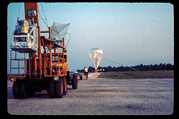
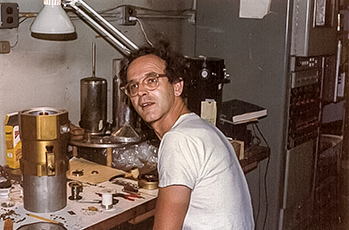
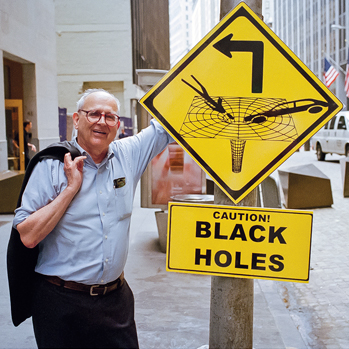

SIGN UP FOR OUR DAILY NEWSLETTER
Get more great content like this delivered right to you!
By providing your email address, you agree to send your email address to the publication. Information provided here is subject to Science's Privacy Policy.
Weiss is also known for speaking his mind. “He is absolutely 100% committed to honesty both in his physics and in life,” says Peter Saulson, a LIGO physicist at Syracuse University in New York, who worked with Weiss at MIT in the 1980s. Dirk Muehlner, a retired physicist in Alamo, California, and one of Weiss’s early graduate students, shares that sentiment. “He’s totally honest. There’s no bullshitting for Rai. There’s no performance.”
People say, 'I failed out of college! My life is over!' Well, it's not over.
Rainer Weiss
As a teenager, Weiss developed two passions: classical music and electronics. Snapping up army surplus parts, he repaired radios out of his bedroom. He even made a deal with the local toughs: If they left him alone as he lugged radios to and from the subway, he’d fix theirs for free. “They would steal things and I would have to fix them,” he says. “It wasn’t a good deal.”
Weiss’s sister, playwright Sybille Pearson, confirms that Weiss spent as much time as possible out of the unhappy home. But, as the only son, he was still something of a prince in his family, she says. For example, whenever the family moved to a new apartment, Weiss got the biggest bedroom to himself, she recalls. In the late 1960s that connection remained tenuous, however. Radiation from the big bang should have a “thermal spectrum” with a lopsided peak indicating the radiation’s temperature. At long wavelengths, several groups had observed a climbing spectrum consistent with a temperature of 3°C above absolute zero. But in 1968, rocket measurements found high amounts of shorter wavelength radiation that clashed with a thermal spectrum and threatened the big bang hypothesis.
To probe the matter, Weiss and his graduate student Muehlner built a device that would fly on a weather balloon and measure the microwave spectrum to shorter wavelengths. In 1973, after three flights and a rebuild, they had solid data that fit a thermal spectrum and for the first time revealed the telltale peak. “It completely destroyed the rocket result,” Burke says. “Among those interested in the microwave background, [Weiss] was suddenly one of their stars.”
that the CMB has a thermal spectrum. It also sensed tiny 1-partin-100,000 variations in the CMB’s temperature from point to point on the sky—traces of infinitesimal quantum fluctuations in the newborn universe that are essential to the standard model of cosmology. In 2006, Americans John Mather and George Smoot shared the Nobel Prize in Physics for, respectively, measuring the spectrum and detecting the fluctuations.
Weiss realized that output could reveal a passing gravitational wave, which generally would stretch the arms by different amounts. He let the class chew on the idea in homework and wrote a 23page report in the quarterly newsletter of MIT’s Research Laboratory of Electronics. LIGO sprouted from that document.
Rainer Weiss in his lab in MIT’s Building 20 in the late 1970s, working on radiation detectors called bolometers.
Massachusetts Institute of Technology
Weiss insists the concept of an interferometric detector was already “floating around.” But others say he was the first to spell out that the detector would have to be kilometers long and to describe how to deal with the various types of noise—from seismic vibrations to the pinging of individual photons on the mirrors—that could drown out the elusive waves.
In the meantime, Weiss became a fixture in Building 20, identifiable by the corncob pipes he smoked until he suffered a mild heart attack in 1995. He would work until 2 a.m., says Nergis Mavalvala, a LIGO physicist at MIT who was Weiss’s graduate student from 1990 to 1997, and would stay even later to help a student. When Mavalvala failed her qualifying exams, Weiss had her attend “reform school” in his office every Saturday for weeks. “He didn’t give a damn about the exams,” Mavalvala says. “But he knew that I had to get past them.”
Weiss earned a reputation for lending nontraditional students a helping hand. In 1983, Lyman Page, who had been out of school for 5 years and had spent 2 years sailing around the world, walked into Weiss’s lab and asked whether he could work for him. “He said ‘I can’t pay you, but you can work in the lab,’” Page says. “So I worked as a carpenter during the day and in the lab at night.” Page, now a cosmologist at Princ eton, credits Weiss for giving him a chance that others did not.
*Correction, 26 August, 12:25 p.m.: The story has been updated to reflect that in the photo of Weiss at the lab bench, he is working on equipment for measurements of the cosmic microwave background.
See also: The long road to proving Einstein's biggest prediction
Posted in: People & EventsScientific CommunityGravitational waves
DOI: 10.1126/science.aag0723